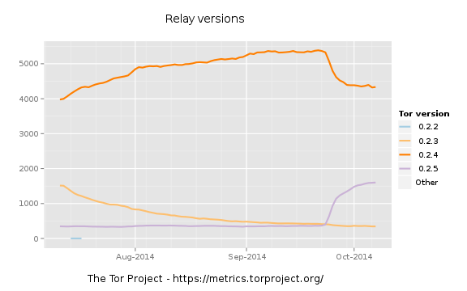

Home | Clients Relays Bridges Pluggable Transports Hidden Services | Bandwidth Performance Diversity | Index About
| Description: | Relays report the Tor version that they are running to the directory authorities. See the download page and ChangeLog file to find out which Tor versions are stable and unstable. This graph shows the number of relays by version. |
| Author: | The Tor Project, Inc. |
| License: | Creative Commons Attribution 3.0 United States |
| Data: | Number of relays and bridges |
This material is supported in part by the National Science Foundation under Grant No. CNS-0959138. Any opinions, finding, and conclusions or recommendations expressed in this material are those of the author(s) and do not necessarily reflect the views of the National Science Foundation.
"Tor" and the "Onion Logo" are registered trademarks of The Tor Project, Inc.
Data on this site is freely available under a CC0 no copyright declaration: To the extent possible under law, the Tor Project has waived all copyright and related or neighboring rights in the data. Graphs are licensed under a Creative Commons Attribution 3.0 United States License.
Design prototype note: There are currently four types of metrics pages: graph, table, data, link. Each graph page shows exactly one graph and optionally provides controls to customize that graph. In most cases the graph will be produced by the server and provided as image, but in some cases the graph will be produced on the client using JavaScript. Adding new graph pages should be easy.